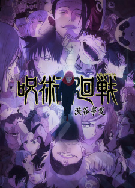

New Release
Trending

-
One Piece
- Japanese : ONE PIECE
- Studio : Toei Animation
- Genre : Action, Adventure, Comedy, Drama, Fantasy, Super Power, Shounen

Japanese : 呪術廻戦 懐玉・玉折／渋谷事変
Studio : MAPPA
Genre : Action, Fantasy, School, Shounen
Jujutsu Kaisen Season 2